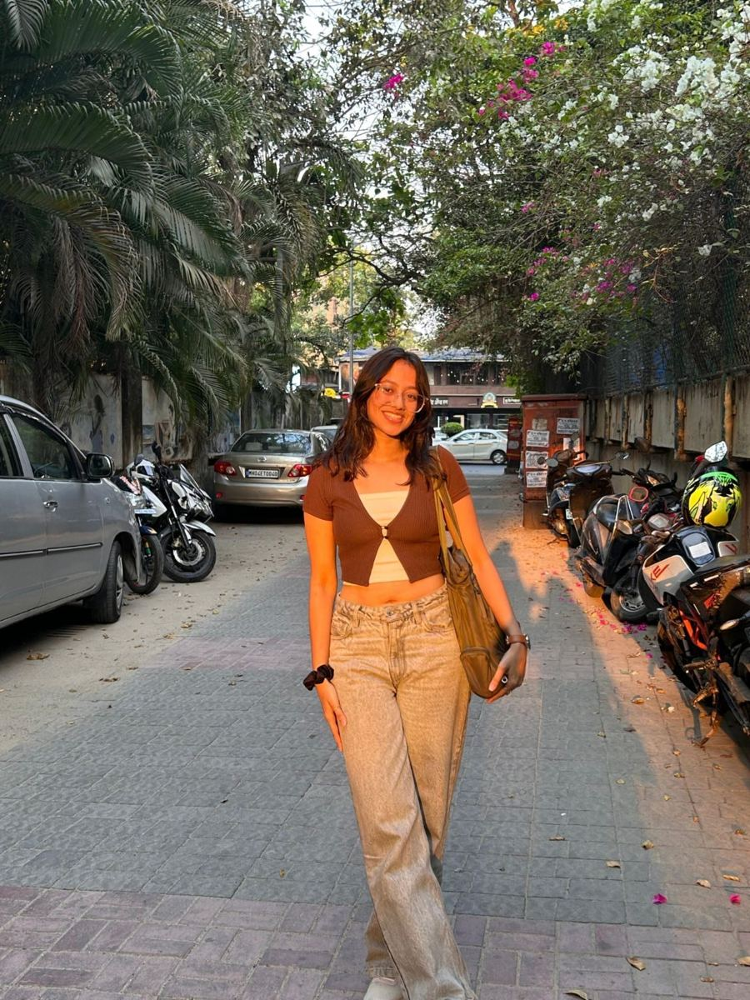
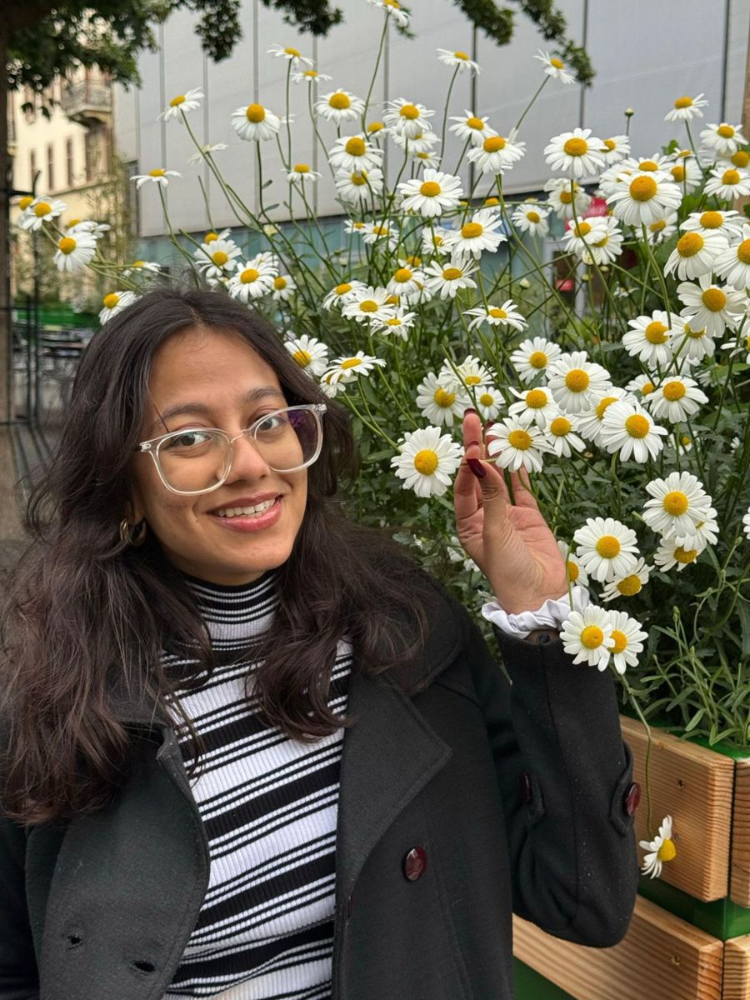
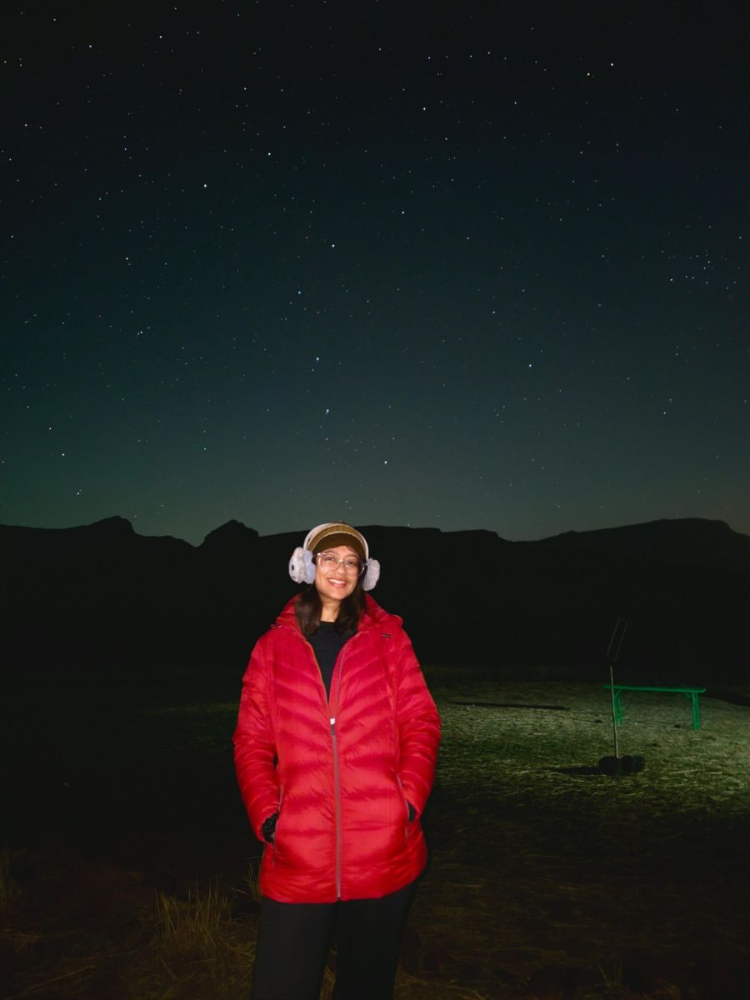
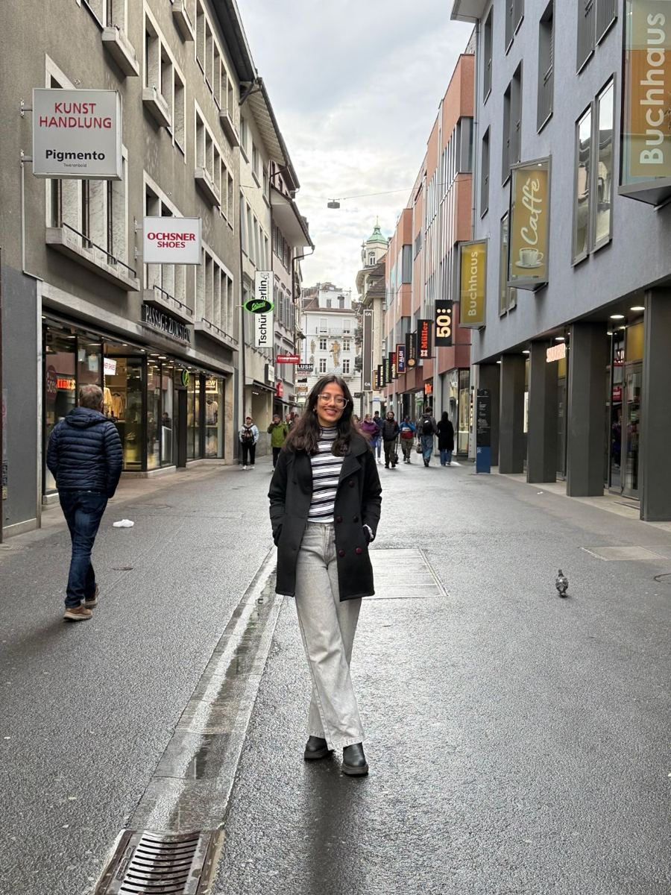

Bonjour, I'm
Tanvi Khanvilkar
Data science undergraduate at NMIMS Mumbai and a published researcher. I like turning big, messy data into answers people can act on, ideally at a clean desk with a good coffee next to me.

A little about me

I'm a data science student who enjoys the whole process: finding the dataset, cleaning it properly, testing whether a pattern is real, and building something people can actually use.
Away from the screen I paint bookmarks, sketch, crochet, sing and play the keyboard, and I go stargazing whenever the sky is clear. I like work that is careful, creative and calm.
Currently brewing
- LeadingData Mavericks, MPSTME's data science committee, as Tech President
- HeadingIn-house Creatives as Head of IHC at Taqneeq, MPSTME's tech fest
- BuildingStatistical models, dashboards and APIs over public datasets
- ExploringMachine learning, beyond the regression basics
Coffee count today: lost track after three.
My skills, mapped
A Secure Document Secret Sharing System using SHA-256-based Share Authentication
A system that splits a document into n shares so that any k of them can rebuild it, and each share is checked with SHA-256 before it's used. I led most of the implementation in a team of three.
Learning & leading
B.Tech in Data Science
NMIMS University, MPSTME · Mumbai
Cumulative GPA 3.97 / 4.00
Student committees at MPSTME
IETE Student Forum · Sattva · Taqneeq · Social Conclave, across tech, research, creatives and social impact
FYJC (Class XI), Science
St. Xavier's College · Mumbai
Scored 84%
IGCSE
Gurukul The Day School
Graduated Grade 10 with 94.4%
Painted bookmarks & sketches
Every study session needs a bookmark, so I started painting my own: watercolour and gouache on textured paper, plus pencil sketches and a little clay. Click any piece to see it larger.

I'd be stargazing
Astronomy is the one passion that has stayed with me my whole life. If I weren't doing data science, I'd be studying the stars. On clear nights you'll find me looking up.
Astronomy: Exploring Time and SpaceUniversity of Arizona · Coursera · 2022 Verify ↗I sing & play keys
Music is how I unwind. I sing whenever I get the chance, and I've played the keyboard for years, ever since my school days.

Bonjour
I love Europe's old streets, the sound of French, and any café with a window seat.
Let's work over coffee
I'm looking for data science and analytics roles, internships and research collaborations. If you have a dataset or a question, I'd like to hear about it.